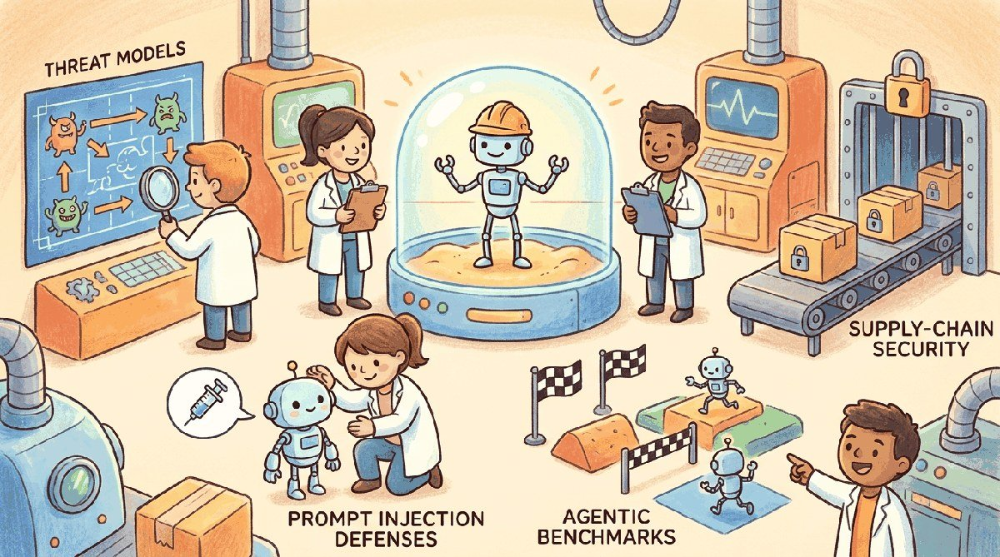

"The more autonomous the agent, the more important the kill switch."
Guard, Autonomy-Auditing AI Agent
Chapter 48 set up guardrails for chat. This chapter raises the stakes: agents that take actions in the world. We cover permission models, sandboxing, approval flows, capability minimization, and the runtime monitors that catch a misbehaving agent before it touches production.
An LLM that hallucinates produces a wrong answer; an agent that hallucinates can delete your production database. Chapter 47 covered adversarial attacks and red teaming for single-call LLMs, and Chapter 48 built the runtime guardrails that catch malicious or unsafe outputs. Chapter 49 raises the stakes to LLMs that act. Agents extend the threat surface in three directions: they execute code, they call external tools that touch real systems, and they are exposed to untrusted data through their inputs, which makes prompt injection an entry vector into anything the agent can reach.
The reference taxonomy is Simon Willison's prompt-injection writing (2022-2024), which named the attack class and tracked its evolution from text-only to indirect (via retrieved documents) and multi-turn forms. The capability-research anchor is Anthropic's "Many-Shot Jailbreaking" paper (Apr 2024, arXiv:2404.02151), which showed that long-context windows themselves create new jailbreak surfaces. The defender's canonical catalogues are the OWASP LLM Top 10 (2024) and MITRE ATLAS, both maintained as living references against which production teams map their threat models.
This chapter walks the full agent-security stack: the threat model, defense-in-depth design, sandboxed execution patterns, the benchmarks that quantify how safe a given agent actually is, and the supply-chain layer that determines whether the tools an agent uses are themselves trustworthy.
- Explain the agent threat model and why tool-using agents face risks that standalone LLMs do not.
- Apply prompt-injection defenses (detector pipelines, dual-LLM patterns) to a tool-using agent.
- Architect a sandboxed execution environment for an agent that runs code or modifies system state.
- Evaluate an agent on agentic security benchmarks (AgentDojo, INJECAGENT).
- Audit the supply chain for an agent sandbox: dependencies, container base images, runtime patches.
- Diagnose LLM hallucinations using retrieval-grounded checks, memorization probes, and PII-leakage tests.
Chapter Overview
Section 49.1 lays out the agent threat model and the family of prompt-injection attacks that target tool-using systems, plus the defense-in-depth design that hardens agents against both accidental error and deliberate exploitation. Section 49.2 covers sandboxed execution: when an agent runs code, that code must be contained. Section 49.3 turns to agentic security benchmarks, the structured evaluation harnesses that let teams measure attack success rate and defense coverage across known threat categories. Section 49.4 covers supply-chain security: the package, model, and dataset provenance practices that ensure the components an agent depends on have not been tampered with upstream. Section 49.5 then closes the chapter with hallucination, the trust failure complementary to security: the taxonomy of failure modes, detection techniques (self-consistency, NLI verification, citation grounding), training-data memorization risks, and the calibrated-abstention patterns that prevent confidently wrong answers from reaching production users.
Sections in This Chapter
Prerequisites
- Agent foundations from Chapter 26
- Guardrails from Chapter 48
- Tool use from Chapter 27
- 49.1 Agent Safety & Prompt Injection Defense Agents that can act in the world can also break the world. Advanced
- 49.2 Sandboxed Execution Environments A sandbox is the single most important safety measure for any agent that executes code or modifies system resources. Advanced
- 49.3 Agentic Security Benchmarks for Tool-Using Systems Tool-using agents face a fundamentally different threat model than standalone LLMs. Advanced
- 49.4 Supply-Chain Security for Agent Sandboxes SBOMs with Syft, vulnerability scanning with Trivy, and image signing with Cosign for agent sandboxes. Advanced
- 49.4a SLSA, CI Hardening & Model-Hub Scanning SLSA provenance, CI hardening with immutable images and pinned dependencies, model-hub security scanning, and real-world supply-chain incidents. Advanced
- 49.5 Why LLMs Hallucinate and How to Catch Them Hallucination taxonomy, detection techniques, retrieval-grounded checks, memorization and PII leakage, and the production patterns that prevent them. Advanced
What Comes Next
Next: Chapter 50: Privacy and Data Protection. Agent-level threat modeling addresses what an agent does; Chapter 50 addresses what it knows. We cover training-data extraction, membership inference, PII handling in prompts and logs, differential privacy for fine-tuning, and the privacy-preserving patterns (federated learning, encrypted inference) that ship in regulated production. Chapter 51 then consolidates the Part X safety toolchain.